О себе
Забанов Александр
- Руководитель направления Backend в компании Веб/Практик
- 10+ лет в backend
- PHP : Bitrix, Laravel, Symfony
- NodeJS : Nest, Express
- Балуюсь : Rust
План
- Зачем нужен Pest - контекст и мотивация
- Синтаксис и Ключевые фичи
- Подводные камни
- Pest + AI - генерация тестов и AI-воркфлоу
Что такое Pest?
- Построен поверх PHPUnit
- Вдохновлён Jest и RSpec
- Лицензия MIT, open-source
- Актуальная версия 4.6.3
Почему важны тесты в эпоху AI-кодинга
- AI не понимает бизнес-контекст
- AI галлюцинирует
- AI ломает архитектуру
- Код ревью не масштабируется
На примере
TaskFlow: SaaS для управления задачами
PHP 8.3 • REST API плюс веб-интерфейс • Пять модулей: авторизация, проекты, задачи, уведомления, биллинг
Стратегия тестирования: Пирамида
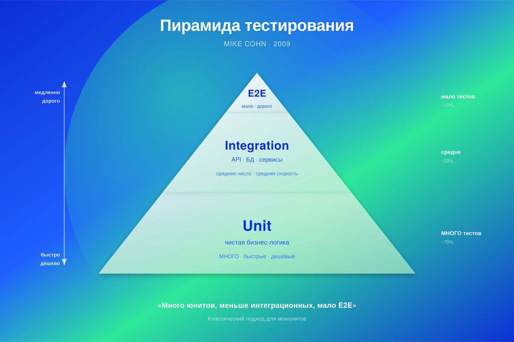
Стратегия тестирования: Кубок
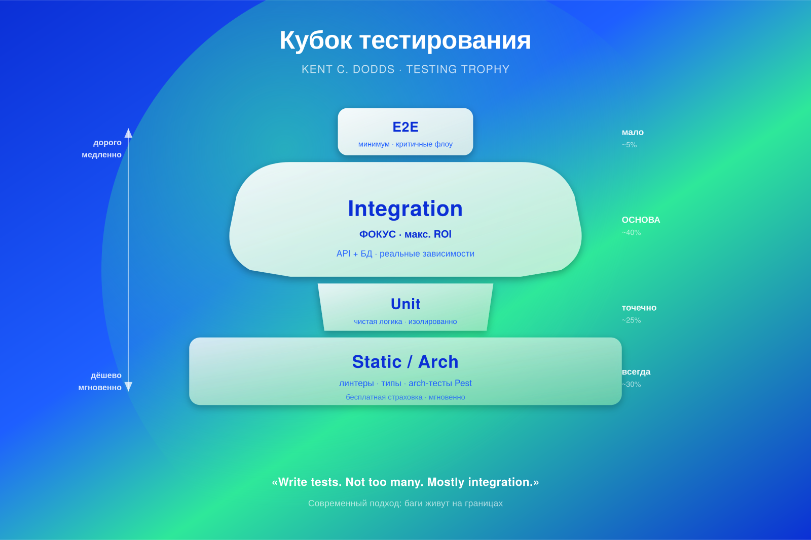
TaskFlow: Кубок
- Static (arch-тесты) - 5 тестов, запуск < 1 сек
- Unit (бизнес-логика) - ~200 тестов, мгновенно
- Integration (API, DB) - ~80 тестов, < 30 сек
- E2E (browser) - ~15 тестов, < 2 мин
- Mutation Testing - поверх всего, проверяет качество
Уровень 0: Static - Arch-тесты
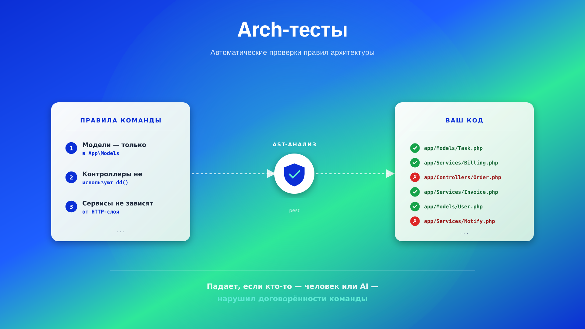
Уровень 1: Unit
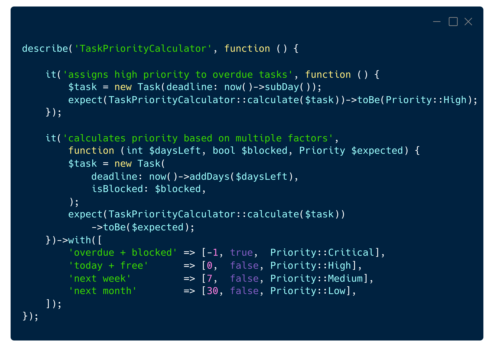
Уровень 2: Integration
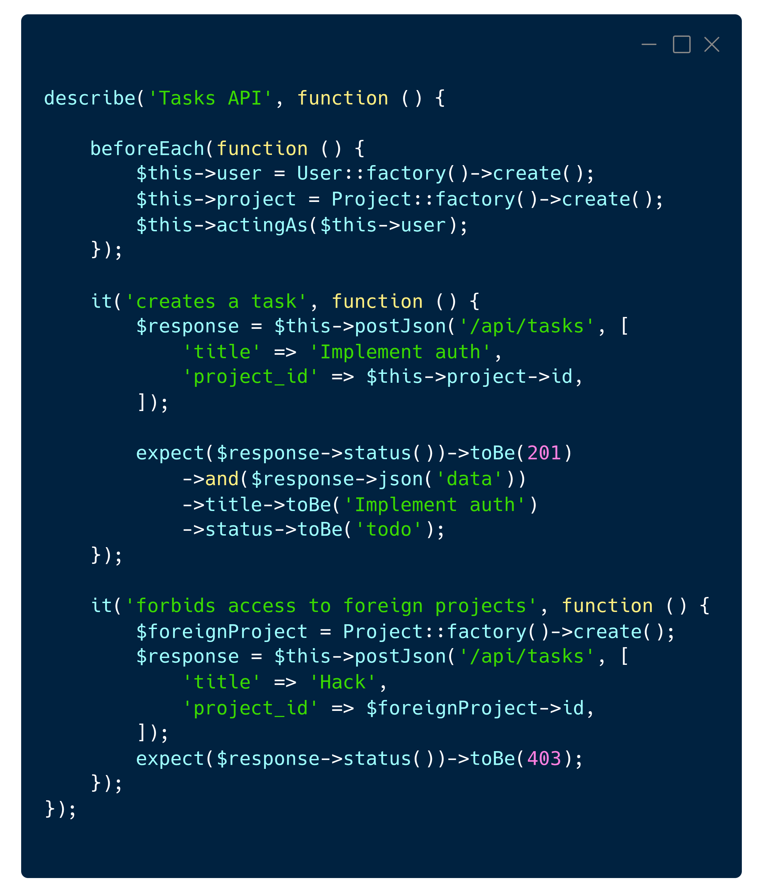
Уровень 3: E2E - Browser Testing
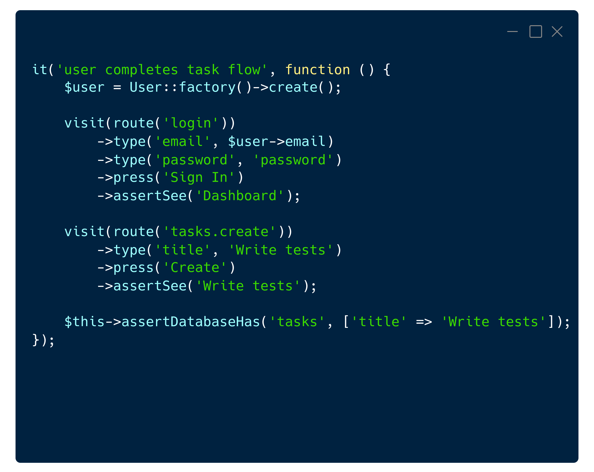
Mutation Testing - проверка качества
Класс "жертва"
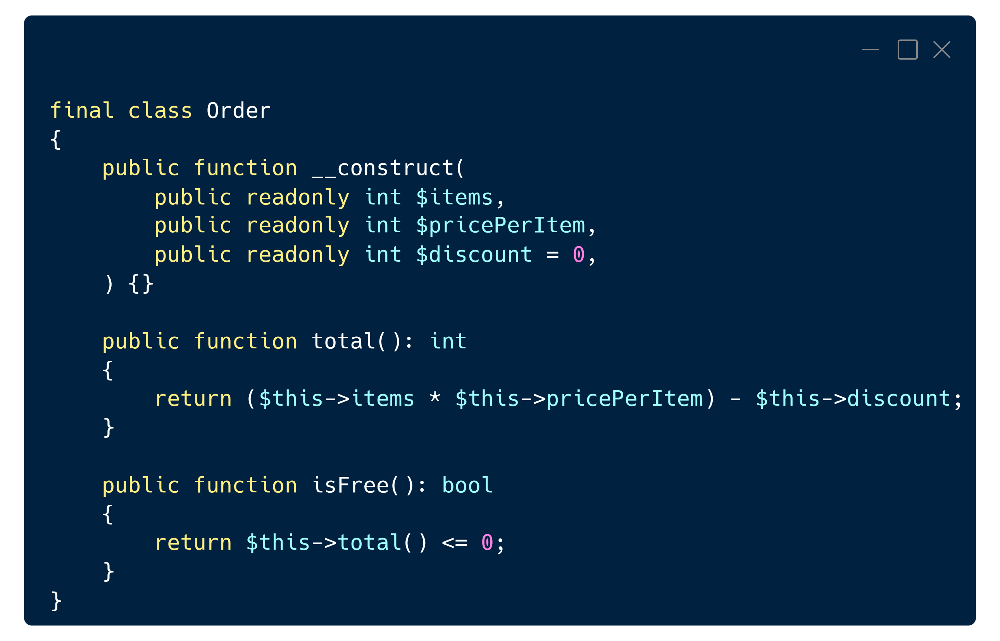
Тест к нему
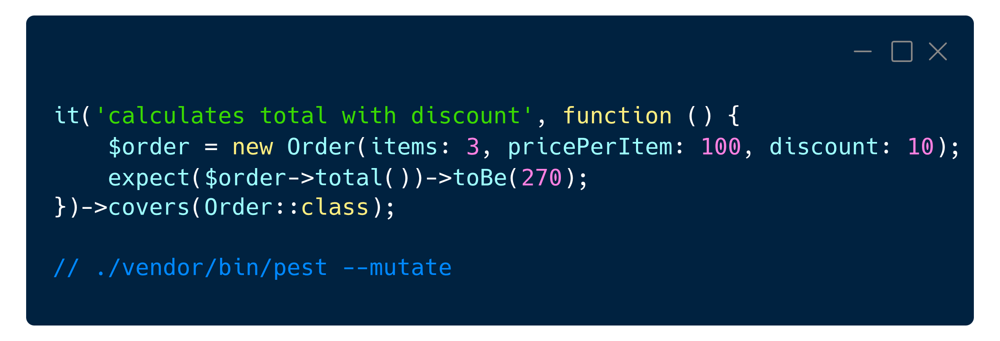
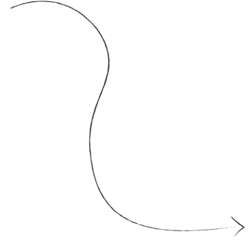
Мутация 1: Арифметический оператор * → +
 До
До
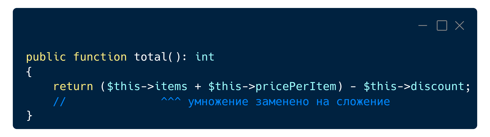
После
Что произойдёт при запуске теста:
- Ожидали: 3 * 100 - 10 = 290
- Получим: 3 + 100 - 10 = 93
- expect(93)->toBe(290) → тест упадёт ✓
- Вердикт: Tested — мутация поймана
Мутация 2: Убрать return
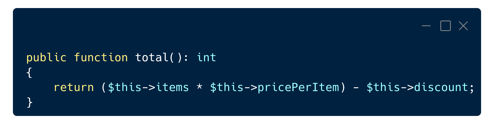
До
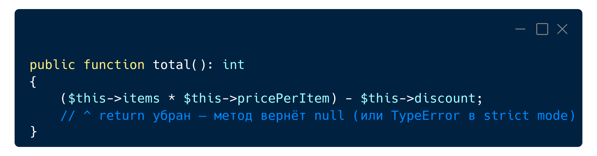
После
Что произойдёт при запуске теста:
- Метод вернёт null вместо числа
- В strict_types получим TypeError: must return int, null returned
- Тест упадёт ✓ → Tested
Cкорость CI
Bash:
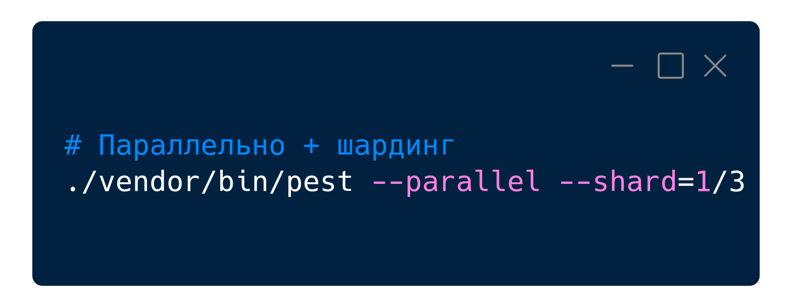
GitHub Actions для TaskFlow:
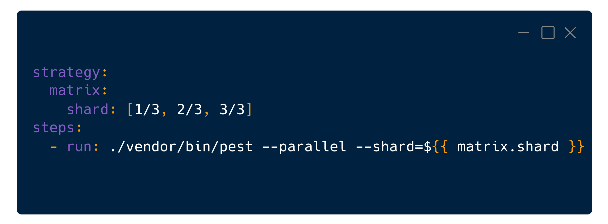
12 мин → 2 мин. Три джобы по 40 секунд вместо одной на 12 минут.
Другие CLI-инструменты:
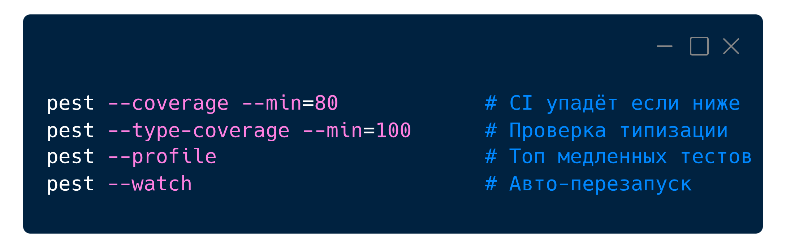
Еще немного плагинов
| Плагин |
Под капотом |
Зачем |
| pest-plugin-drift
|
rector |
Переписывает PHPUnit-классы в Pest-функции |
| pest-plugin-stressless
|
k6 |
Нагрузочное тестирование HTTP
|
| pest-plugin-snapshot
|
Файловое хранилище снапшотов
|
Сериализация + diff при сравнении
|
| pest-plugin-profanity
|
Словари по языкам (9 языков, вкл. ru)
|
Цензура
|
Issue
- #1344 Named arguments в datasets
- #1384 пустые datasets
- #1483 --parallel молча фейлит в v4
- #1549 Arch-тесты игнорируют exclude из phpunit.xml
- #1605 Навигация = silent crash. Процесс умирает без ошибки.
- #1593 Субдомены не работают. Хост захардкожен в ServerManager.php.
- #1443 Каждый visit() = новый контекст. Cookies/сессии не разделяются.
Custom Expectations - свои проверки:
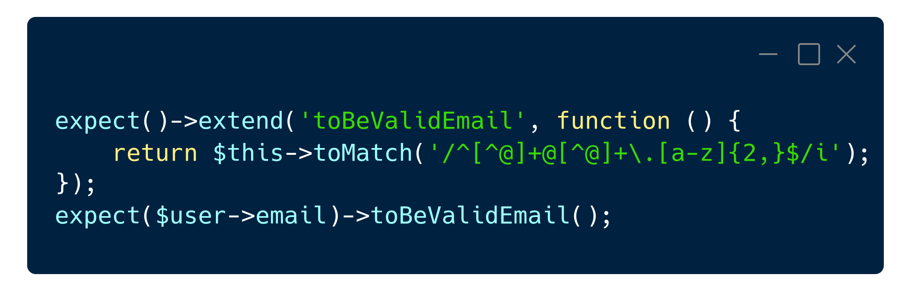
Conditional skip:
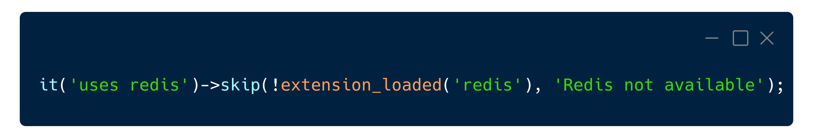
AI + Pest: тесты в эпоху AI-кодинга
Почему Pest хорош для AI-воркфлоу
| Аспект |
Как Pest помогает |
| Guardrails |
Arch-тесты ловят нарушения архитектуры AI-кодом
|
| Визуальный контроль |
it('validates email') - мгновенная проверка глазами
|
| Генерация |
Лаконичный синтаксис → меньше токенов → точнее результат
|
| Качество |
Mutation testing показывает пробелы в AI-тестах
|
| Скорость |
AI генерирует 80% тестов → --mutate находит остальные 20%
|
Pest vs PHPUnit
| Критерий |
PHPUnit |
Pest |
| Синтаксис |
Классы, методы, $this->assert
|
Функции it(), test(), expect()
|
| Expectation API
|
Нет (только assert)
|
Цепочки: expect()->toBe()->not->...
|
| Arch-тесты
|
Нет
|
Встроенные с пресетами
|
| Mutation Testing
|
Отдельный Infection
|
Встроенный --mutate
|
| Browser Testing
|
Отдельный Dusk/Panther
|
Встроенный плагин (Playwright)
|
| Datasets
|
@dataProvider + отдельный метод
|
->with([])
|
| Параллельность
|
Paratest (отдельный пакет)
|
--parallel из коробки
|
| Watch Mode
|
Нет
|
--watch
|
Миграция: 3 шага
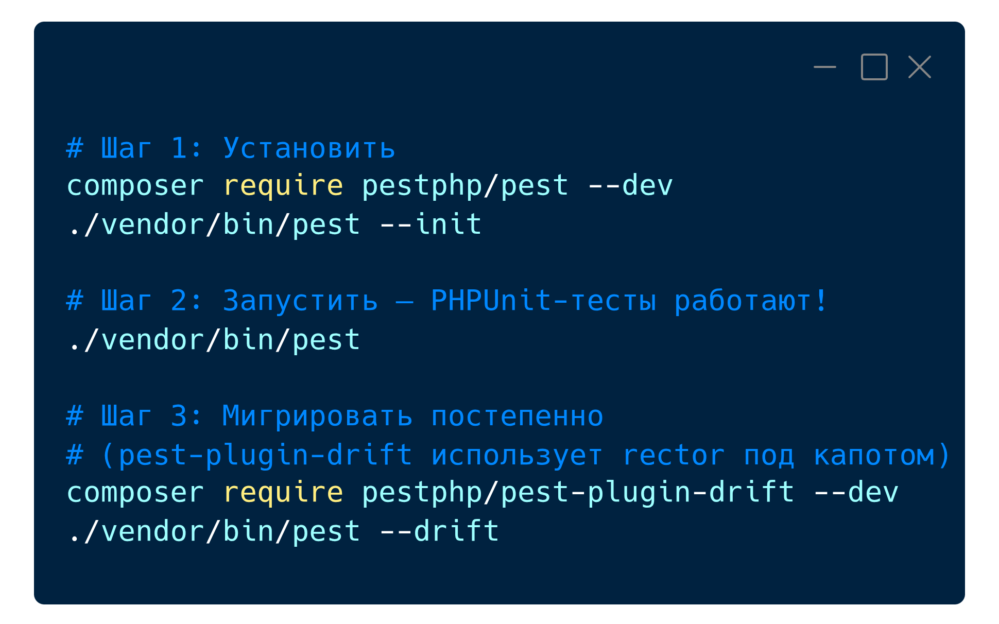
AI-скиллы для генерации Pest-тестов
Напиши Pest-тесты для [Класс/Сервис]:
- Стиль: expect() API, не $this->assert
- Формат: describe/it, BDD
- Datasets: для вариаций входных данных
- Покрытие: happy path + edge cases + negative
- Arch: проверка зависимостей модуля
- Указание: ->covers() для mutation testing
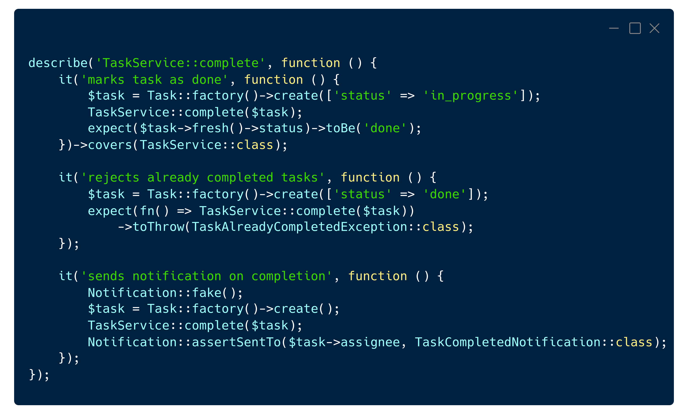
Best Practices: AI + Pest
- Указывайте Pest-стиль (expect, не assert) в промтах
- Требуйте datasets для edge cases
- Проверяйте AI-тесты через --mutate
- Пишите arch-тесты до AI-генерации кода
- Добавляйте ->covers() для mutation testing
- Не принимайте изменения без понимания
Итоги
- Тесты в эпоху AI - критическая инфраструктура, не опция
- Pest покрывает все уровни "кубка" одним инструментом
- Arch-тесты = guardrails для AI-кода - ставьте ДО генерации
- Mutation testing > coverage - проверяйте качество, не количество
- AI + Pest = 80% тестов за минуты - но --mutate обязателен
- Browser Testing v4 - мощно, но следите за issues
- Pest не про Laravel - он для любого PHP-проекта
pestphp.com • github.com/pestphp/pest